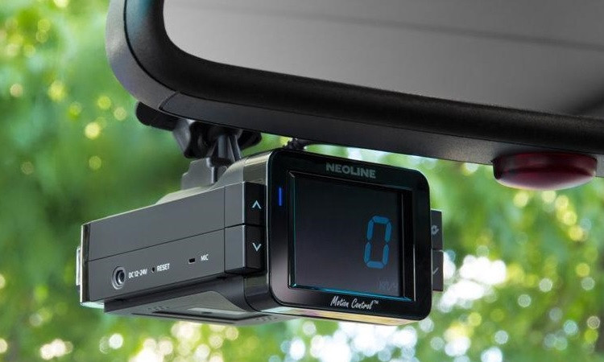
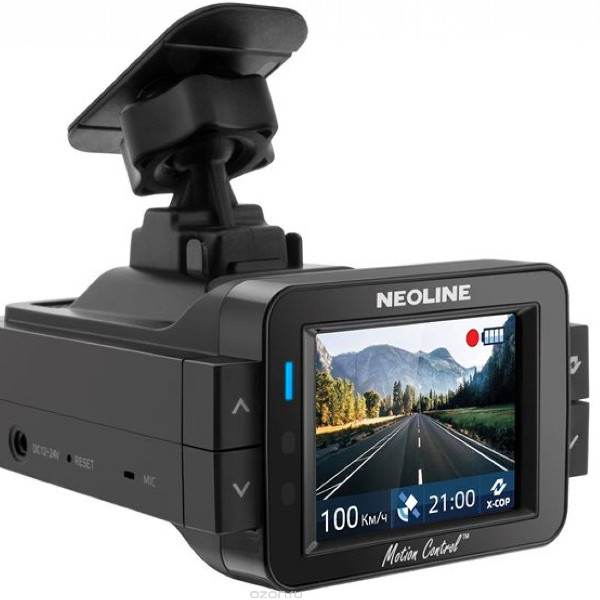

Neoline X-COP 9100s — это один из удачных примеров гибрида радар-детектора и видеорегистратора.
Каждый владелец автомобиля периодически задумывается об улучшении своего средства передвижения. Это может быть красивый аксессуар, новая аудиосистема или даже яркий спойлер. В последнее время такими аксессуарами и помощниками становятся видеорегистраторы или радар-детекторы. А что, если их совместить?
Новинка способна распознать все виды современных радаров, в том числе новейшие комплексы MultaRadar. Кроме того, X-COP 9100s станет отличным помощником путешественника, ведь создан он не только для России, а ещё для Европы, СНГ, США и других стран, популярных у наших соотечественников.
На момент написания этой статьи, Neoline X-COP 9100s можно назвать одним из самых технически совершенных гибридов, которые можно купить. Для того, чтобы выбиться в лидеры, X-COP 9100s получил много новых технологий, которые не встречаются у других представленных на рынке устройств. В этом разделе мы собрали четыре его главных особенности.
Модуль определения радарных комплексов EXD PLUS относится к новому поколению подобных устройств. Он способен «почуять» радары в диапазонах К, Ка, а также распознать «Лазер», «Стрелку» и определить новый тип радаров MultaRadar CD/CT и MultaRadar CD moving. Эти комплексы невидимы для прочих детекторов из-за сложной структуры сигнала. Для того, чтобы безошибочно их идентифицировать, в устройство Neoline добавлен новый диапазон «М». Кстати, данный тип радаров может охватывать до 6 полос движения и встречается как в виде стационарного комплекса, так и в автомобилях осуществляющих контроль дорожного движения. Также у нового модуля в два раза увеличена дальность обнаружения радаров в диапазонах K и Ka, и есть возможность обнаружения радаров осуществляющих контроль «в спину», дальность обнаружения увеличена на 130%.
Для того, чтобы не схлопотать огромный штраф (и другие неприятные последствия) в Neoline X-COP 9100s предусмотрена возможность отключения радарного модуля. В таком случае устройство превратится в видеорегистратор с богатой базой камер и радаров. Помимо этого, у X-COP 9100s есть защита от систем обнаружения радар-детекторов Spectre 4 и Spectre Elite. Но на наш взгляд, лучше соблюдать местное законодательство и отключить модуль определения радаров там, где это необходимо.
Следующая технология разработана компанией Neoline и по праву является её фирменной фишкой. Это фильтр Z-сигнатур, который значительно уменьшает ложные срабатывания гибрида от сигналов, исходящих от автоматических дверей АЗС, слепых зон автомобилей и станций сотовых сетей. Подобные сигналы будут фильтроваться и не вызовут ложных срабатываний.
Радар-детектор Neoline X-COP 9100s можно запитать как от зарядного устройства для 12 вольтовой розетки, так и от бортовой сети автомобиля. Для последнего метода в комплекте предусмотрен специальный кабель Neoline Fuse Cord 3 pin с блоком предохранителей. При подключении к бортовой сети с помощью кабеля, устройство автоматически перейдёт в «режим парковки» после отключения зажигания. В таком режиме работы запись видео будет включаться автоматически при определении движения в кадре или при срабатывании G-сенсора.
Судя по тому, как работает Neoline X-COP 9100s, разработчики его софта учли многие требования водителей. Гибрид неназойлив, о камерах он предупреждает заранее, чётко и лаконично, не отвлекая лишний раз от дороги. В предупреждении проговаривается тип радара или камеры, способ контроля ПДД (если есть), расстояние до объекта, разрешённая скорость и средняя скорость (при встрече с камерами контроля средней скорости.

Чтобы дисплей X-COP 9100s не отвлекал водителя, его можно превратить в цифровой спидометр с чёрным фоном или перевести его в «тёмный» режим. В последнем случае записываемое видео не будет отображаться на экране, а все оповещения о радарах и камерах будут показаны на чёрном фоне.
К модулю гибрида у нас также не нашлось претензий. При включении авторежима X-COP поиск радаров по частотам отключался при низкой скорости (0 – 24 км/ч), чтобы устройство не мешалось в пробках. При движении с большей скоростью гибрид предупреждал о найденных камерах и радарах заранее. Чем быстрее двигался автомобиль, тем больше была проговариваемая дистанция до камер и радаров.
Качество записи видео Neoline X-COP 9100s высокое. Днём и вечером можно разглядеть номера у автомобилей спереди и на соседних полосах. Номер машин «на встречке» не замыливаются и не размываются во время их движения. Дистанция читаемости номеров днём составляет примерно 1,5 корпуса автомобиля. Ночью номер можно разглядеть с расстояния примерно в один корпус авто, в том числе и у автомобилей на соседних полосах.
Если вы ищете самый лучший гибрид, то непременно посмотрите в сторону Neoline X-COP 9100s. Это новейший модуль определения радаров, от которого не укроются даже современные комплексы MULTARADAR CD/CT. Neoline X-COP 9100s При этом, у X-COP 9100s есть защита от ложных срабатываний и особые фильтры, с помощью которых гибрид не будет реагировать на датчики мертвых зон, двери АЗС и тому подобные «помехи». И конечно же, у него есть встроенная база радаров и камер, регулярно обновляемая производителем. И при этом – совершенно бесплатно. К тому же, ездить с ним оказалось удобно. Он не замучает водителя длинными предупреждениями, а экран устройства можно перевести в «тёмный» режим работы, чтобы не отвлекал ночью.